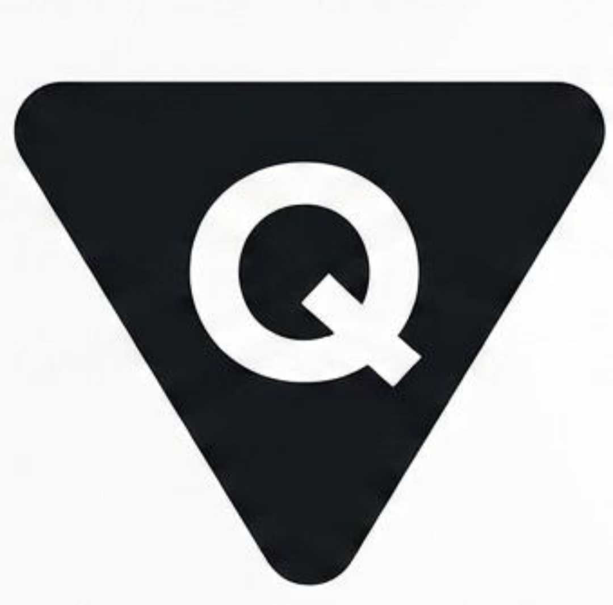

Aprendé sobre calidad, procesos de desarrollo tradicionales y ágiles con contenido teórico, ejemplos prácticos y herramientas interactivas.
Conceptos clave de calidad, técnicas de aseguramiento y herramientas utilizadas en la industria.
Conceptos clave de calidad, métricas y estándares.
Modelo clásico con seis características: funcionalidad, fiabilidad, usabilidad, eficiencia, mantenibilidad y portabilidad.
Sucesor de 9126, integra requisitos y evaluación de calidad, ampliando el modelo con calidad de uso y calidad en datos.
Estas tarjetas son informativas por ahora; todavía no tienen una interacción para desplegar más detalles.
Filtrá por categoría.
Jira
Bugzilla
ESLint
SonarQube
TestRail
Zephyr
Ciclo de vida del desarrollo y modelos tradicionales.
Relevamiento y análisis de necesidades.
Arquitectura y especificación técnica.
Implementación del código.
Verificación y validación de calidad.
Puesta en producción.
Correcciones y mejoras continuas.
Organiza el trabajo en etapas principalmente secuenciales; los cambios pueden requerir volver a etapas anteriores.
| ✔ Simple de planificar y documentar | ✘ Menos flexible ante cambios |
Relaciona las etapas de especificación y diseño con actividades de verificación y validación.
| ✔ Fuerte énfasis en verificación y validación | ✘ Puede resultar rígido ante requisitos cambiantes |
El sistema se construye y mejora mediante ciclos sucesivos.
| ✔ Permite obtener comentarios y valor tempranamente | ✘ Requiere gestionar bien los cambios y la integración |
Scrum, Kanban, XP y una introducción en profundidad sobre Scrum.
Scrum, Kanban y XP: principios, responsabilidades y elementos de trabajo.
Product Owner, Scrum Master y Developers tienen responsabilidades específicas y colaboran para alcanzar el objetivo del producto.
Los eventos de Scrum son Sprint, Sprint Planning, Daily Scrum, Sprint Review y Sprint Retrospective. Cada uno tiene un propósito definido.
Los artefactos de Scrum son Product Backlog, Sprint Backlog e Incremento. Cada uno se asocia con un compromiso que aporta transparencia.
Conocé al equipo detrás de este proyecto y qué nos motiva a construirlo.
Coordina las reuniones del equipo y ayuda a eliminar impedimentos. Apasionado por la mejora continua.
Encargado de la experiencia visual del sitio. Le interesa que el contenido técnico se entienda de forma simple y accesible.
Desarrolla la lógica interactiva del sitio, como las pestañas, los filtros y el glosario. Le gusta el desarrollo ágil y aprender nuevas tecnologías.
Valida que cada funcionalidad se comporte como se espera. Busca que el software tenga la menor cantidad posible de defectos.